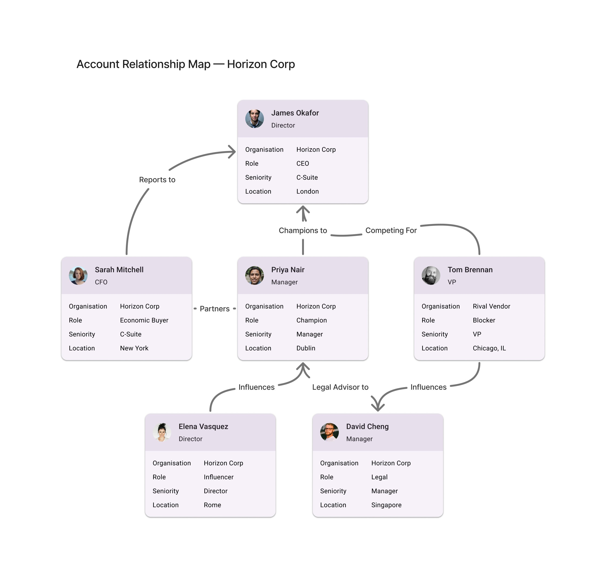

N
Nexus
★ Demo Mode
Horizon Corp · Dan Quinn · 6 scripted scenarios
Live AI chat →
Home
Relationship map
01
Weekly priorities
02
Conflict detected
03
Draft outreach
04
Schedule meeting
05
Coverage gaps
06
Account Relationship Map — Horizon Corp
Base view · 6 contacts · all connectors

Map view
Base Map · FigJam 01
Suggested queries